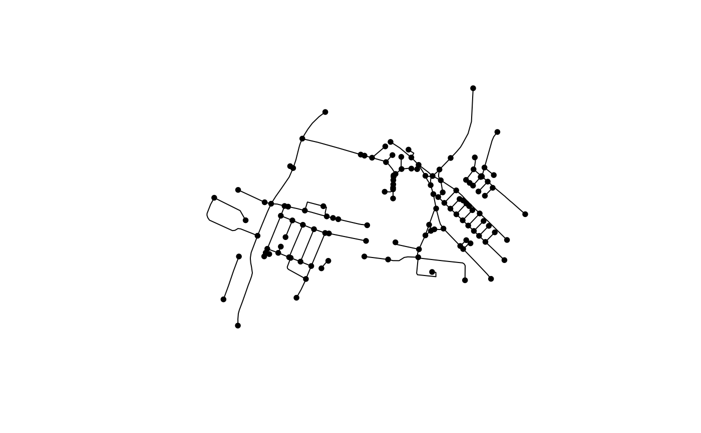

Convert a spatial network to an undirected sfnetwork
Source:R/get-network-graph.R
net_2_sfnet_undirected.RdConvert a spatial network to an undirected sfnetwork
Arguments
- net_sf
a
sfobject representing a spatial network- require_equal
logical or character vector. Defaults to
TRUE. IfTRUE, only pseudo nodes that have incident edges with all equal attribute values are removed. Alternatively, a character vector with the names of the attributes to check for equality can be provided. In that case, only those attributes are checked for equality. IfFALSE, all pseudo nodes are removed regardless of attribute values. All other attributes are collapsed separated by a comma.
Examples
# Copy the ITS file to tempdir() to make sure that the examples do not
# require internet connection. You can skip the next 4 lines (and start
# directly with oe_get_keys) when running the examples locally.
its_pbf = file.path(tempdir(), "test_its-example.osm.pbf")
file.copy(
from = system.file("its-example.osm.pbf", package = "osmextract"),
to = its_pbf,
overwrite = TRUE
)
#> [1] TRUE
net_sf <- oe_get_network(
place = "ITS Leeds",
mode = "driving",
clean_output = TRUE,
download_directory = tempdir(),
quiet = TRUE
)
if (requireNamespace("sfnetworks", quietly = TRUE)) {
sfnet_undirected <- net_2_sfnet_undirected(net_sf)
plot(sfnet_undirected)
}
#> Warning: to_spatial_subdivision assumes attributes are constant over geometries
